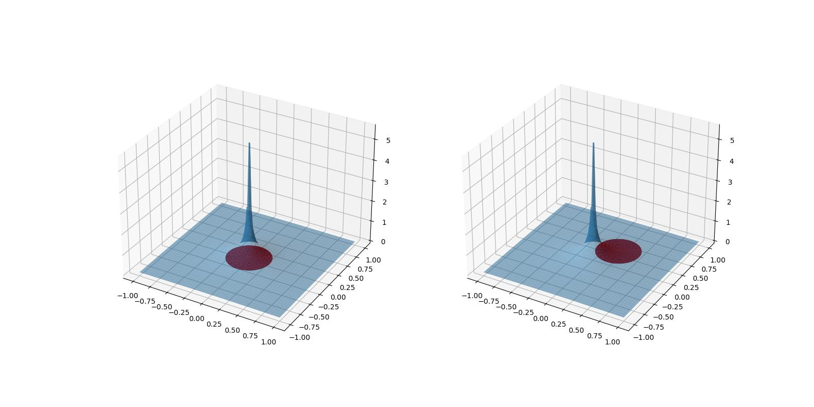

Introduction
教材
Lawrence C.Evans Partial differential equations
偏微分方程简介
本章介绍各个偏微分方程的定义以及一些常用的结论。
准备符号
令 \( \alpha=(\alpha_1, ... , \alpha_n), \quad \alpha_n \ge 0 \)，
$$ |\alpha| := \alpha_1 + ... + \alpha_n $$ $$ \alpha ! := \alpha_1!\cdots\alpha_n! $$
$$ D^\alpha u(x) := \frac{\partial^{\alpha_1} u}{\partial x^{\alpha_1}}\cdots\frac{\partial^{\alpha_n} u}{\partial x^{\alpha_n}} $$ $$ D^k u(x) = \{ D^\alpha u(x) \mid |\alpha|=k \} $$
nabla算子 $$ \nabla u = (\frac{\partial u}{\partial x_i}, ..., \frac{\partial u}{\partial x_n}) $$ Laplace算子 $$ \Delta u = \nabla\cdot\nabla u = \frac{\partial^2 u}{\partial x_i^2} + ... + \frac{\partial^2 u}{\partial x_n^2} $$
Exercise
\( D^k u(x) \) 有几项？
事实上，就是将 \(n\) 个苹果，放进 \(k\) 个盒子，那么显然有 \( \begin{pmatrix}n+k-1\\ k \end{pmatrix} \) 种放法。
PDE 定义
Lawrence C.Evans Partial differential equations 1.1
令 \( k\ge 1 \)，\( U \) 是一个 \( R^n \) 中的开集。 给定函数 $$ \begin{equation} F: R^{n^k} \times R^{n^{k-1}} \times \cdots \times R^n \times R \times U \to R \end{equation} $$ 与未知函数 $$ u: U \to R $$ 等式 $$ \begin{equation} F(D^ku(x), D^{k-1}u(x), ... , Du(x), u(x), x)=0 \quad (x\in U) \end{equation} $$ 称为 \( k \) 阶偏微分方程。
按线性性分类
- 线性 linear： $$ \sum_{|\alpha|\le k}a_\alpha(x) D^\alpha u = f(x) $$
- 半线性 semilinear：$$ \sum_{|\alpha|=k}a_\alpha(x) D^\alpha u + a_0(D^{k-1}u, ... , Du, u, x) = 0 $$
- 次线性 quasilinear：$$ \sum_{|\alpha|=k}a_\alpha(D^{k-1}u, ... , Du, u, x) D^\alpha u + a_0(D^{k-1}u, ... , Du, u, x) = 0 $$
- 非线性 nonlinear：非线性的依赖最高阶导。
四种重要的方程
$$ \begin{gather} 传输方程 & u_t+b\cdot Du = 0 \\ Laplace方程 & \Delta u = 0 \\ 热方程 & u_t-\Delta u = 0 \\ 波动方程 & u_{tt} - \Delta u = 0 \\ \end{gather} $$
Laplace方程
Lawrence C.Evans Partial differential equations 2.2
- Laplace's equation $$ \Delta u = 0 $$
- Poisson's equation $$ -\Delta u = f $$
满足 Laplace 方程的函数称为 调和函数(harmonic function)。 调和函数是函数本身的几何性质，所以坐标轴平移、旋转都不影响函数的调和性质。
调和函数基本解
$$ \Phi(x) := \begin{cases} -\frac{1}{2\pi}\log|x| & (n=2) \\ \frac{1}{n(n-2)\alpha(n)}\frac{1}{|x|^{n-2}} & (n \ge 3) \end{cases} $$
基本解的形式是通过解径向函数得到的，它满足 Laplace 方程，但它有一个奇点 0。
思考：基本解的系数是怎么选取的呢？
在这之前让我们想想基本解有什么用 （参考叠加原理）。
就是因为基本解在奇点处不满足Laplace方程，那么 \(-\Delta\circ\Phi(0)\) 总应该有个特殊的‘值'， 那么我们只要选取一个合适的值，让 \(-\Delta\circ\Phi(0) = \delta\) ， 那么根据叠加原理，\(u=\Phi\ast f\) 就是满足 Poisson 方程的函数。
Poisson方程的解
$$
u(x) = \Phi\ast f(x) = \int_{R^n} \Phi(x-y)f(y) dx
$$
我们这里给出的是满足方程的全空间的解，所以还没有边界条件的限制。
我们上一节已经从直观上得到了 Poisson 方程的解。只需要严格的证明就行。
但是，我们这里只对
$$ f\in C_c^2(\mathbb{R^n}) $$
来证明
（这自然是因为对更低光滑性的 \(f\) 的证明稍微有点困难，而不是解本身错误）。
事实上，对于 \(f\) 所在空间的选取，也是随着这个证明的需要而定的。
- 为了保证函数是存在的，我们意识到需要证明 \(\int_{B(0, r)}\Phi(x)\) 是有界的。
- 利用卷积性质，得到 $$ u_{x_i}=\int_{R^n}\Phi(y)f_{x_i}(x-y)dy $$ $$ u_{x_ix_j}=\int_{R^n}\Phi(y)f_{x_ix_j}(x-y)dy $$ 这里就是为什么对 \(f\) 的连续性有要求。
- 由于我们不想动 \(f\)，那么就通过 Gauss-Green定理 来将微分算子转移到 \(\Phi\) 上
- 由于 \(\Phi\) 在 0 处是奇点，将积分分为两部分 $$ -\Delta u=\int_{B(0,\epsilon)} + \int_{R^n - B(0,-\epsilon)} = I_\epsilon + J_\epsilon $$ 当 \(\epsilon\to 0\) 的时候，\(I_\epsilon\to 0\), \(J_\epsilon\to f(x)\)。 整理即可。
证明见Lawrence C.Evans Partial differential equations 2.2.1.b Thm 1
练习: 对于 \(n\ge 3\) 和 \(f\in C_c^2(R^2)\)， \(u(x)\) 是否是有界函数？
如果你熟悉叠加原理那么直观上你会觉得这是显然的。 因为\(f\) 有界，支撑集也有界，而我们已经证明了 \(\int_{B(0, r)}\Phi(x)\) 是有界的，而且它随着 \(r\)单调! 